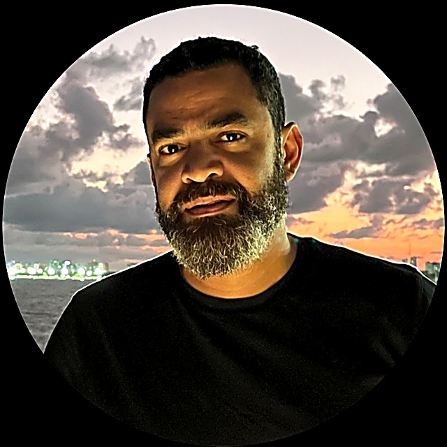
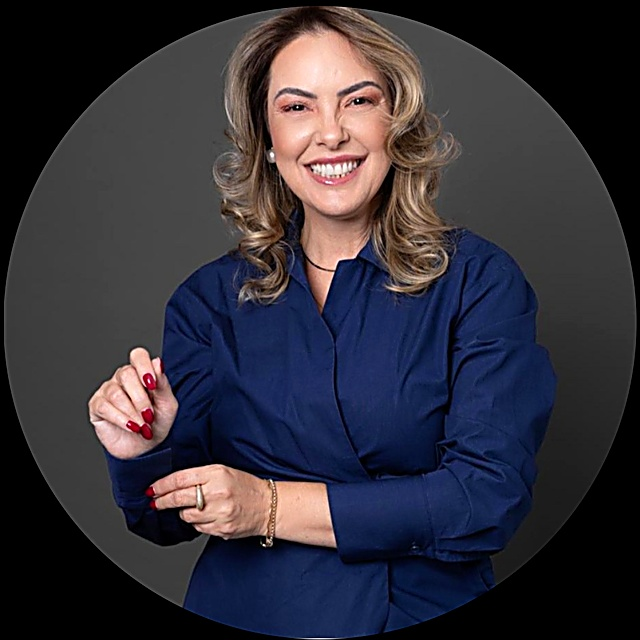

Sua empresa cresceu. Ela está estruturada para continuar crescendo?
A EXPLORE ajuda PMEs de todo o Brasil a organizar rotina, processos, métricas e gente, sem perder a agilidade que fez a empresa crescer até aqui.
O que trava o crescimento da sua empresa hoje?
Quando a empresa cresce, os pontos de trava mudam de lugar. Reconhece algum desses sinais?
Reunião acontece, mas nada muda depois
O time se encontra toda semana, mas as mesmas decisões voltam à pauta no mês seguinte.
Um processo inteiro depende de uma pessoa só
Se essa pessoa falta ou sai, ninguém mais sabe exatamente como aquilo funciona.
Você só descobre o problema no extrato do banco
Os números existem, mas chegam tarde demais para mudar o resultado do mês.
Toda decisão importante ainda passa por você
O time cresceu, mas a responsabilidade de decidir continua concentrada numa pessoa só.
Consultoria feita para o tamanho real da sua empresa
A EXPLORE é uma consultoria de desenvolvimento organizacional focada em PMEs em transição de complexidade: empresas de 10 a 150 colaboradores que já não cabem mais na forma como foram criadas.
PMEs que já sentem o crescimento pedindo mais estrutura do que a empresa tem hoje.
Quem lidera a EXPLORE

Telmo atua há mais de 20 anos em posições executivas e consultivas, apoiando CEOs e conselhos na estruturação de negócios mais eficientes, sustentáveis e preparados para crescer, em setores como real estate, shopping centers, hotelaria, estacionamentos e serviços. Formado em Ciência da Computação, com pós-graduação em Gestão de Projetos, começou a carreira com base técnica forte e construiu, ao longo do tempo, uma atuação que integra visão estratégica, disciplina operacional e desenvolvimento humano. Já liderou projetos de governança corporativa, turnaround operacional, expansão de unidades, estruturação de KPIs e rituais executivos, com resultados concretos em redução de custos, aumento de produtividade e crescimento estruturado. Na EXPLORE, ajuda empresas a enxergar o todo, conectando estratégia, governança, processos e pessoas.

Aexane é jornalista, psicóloga e treinadora comportamental sistêmica. Iniciou a atuação como psicóloga clínica em 2009 e, desde 2012, se dedica a transformação de vida e carreira, ajudando pessoas a desenvolverem comportamentos mais conscientes e alinhados com sua essência. É master trainer coach e já treinou lideranças em diferentes pontos do Brasil, o que a levou a estruturar uma metodologia própria, unindo psicologia, coaching e uma visão sistêmica sobre a relação entre indivíduo e organização. Acredita que líderes com autoestima fortalecida constroem equipes mais saudáveis e resultados mais consistentes. Na EXPLORE, aplica esse olhar ao desenvolvimento de pessoas e lideranças, com foco em autenticidade, consciência e propósito.
Uma frente para cada momento da sua empresa
Para quem ainda não sabe onde exatamente está travando
Mapeamos rotina, processos, métricas e clima do time para mostrar exatamente onde a empresa está travando o próprio crescimento.
Para quem ainda depende de cobrar o time todo dia
Desenhamos reuniões, rotinas e processos que o time consegue seguir sozinho, sem depender de cobrança constante do dono.
Para quem decide no escuro, sem número na mesa
Colocamos os números certos na mesa para que decisão deixe de ser sobre feeling e passe a ser sobre dado.
Para quem lidera sozinho demais
Preparamos gestores e equipes para o próximo tamanho da empresa, com treinamentos práticos, não teóricos.
Da consultoria à execução, em cada frente que sua empresa precisa
Jornada Oriente
Nosso método completo de estruturação organizacional, em três etapas conectadas, do diagnóstico até o plano rodando de verdade no dia a dia do time.
Diagnóstico
Mapeamos rotina, processos, métricas e pessoas para identificar exatamente onde a empresa trava.
Mapa de Orientação
Transformamos o diagnóstico em um plano de ação priorizado, com responsável e prazo definidos para cada frente.
Trilha de Desenvolvimento
Acompanhamos a execução com rituais, treinamentos e revisões periódicas, até o plano virar rotina do time.
Recrutamento e seleção
Estruturamos o processo seletivo do perfil da vaga ao onboarding, para contratar com critério e reduzir turnover.
Treinamentos e desenvolvimento de lideranças
Programas práticos de liderança, comunicação e gestão de pessoas, em formato presencial ou híbrido.
Gestão de riscos psicossociais
Estruturamos o mapeamento e o PGR de riscos psicossociais exigidos pela NR-1, com fiscalização já em vigor desde maio de 2026.
Metodologia validada, aplicada do jeito certo para o seu porte
Diagnóstico
Entendemos o ponto real da empresa antes de propor qualquer mudança.
Plano
Priorizamos o que resolve mais rápido e traz mais retorno primeiro.
Implementação
Acompanhamos de perto até o ritual virar hábito do time, não uma tarefa extra.
Acompanhamento
Medimos resultado e ajustamos o que for preciso ao longo do caminho.
Metodologias conhecidas, aplicadas de forma simples
Empresas que já estruturamos
Programa de liderança em 4 encontros
Time de gestores sem linguagem comum de liderança, decisões concentradas em poucas pessoas.
Diagnóstico organizacional completo
Escritório em crescimento sem visibilidade sobre saúde do time e riscos de sobrecarga.
Auditoria de estoque em três lojas
Rede varejista sem controle confiável sobre o que realmente tinha em estoque.
Nomes de clientes disponíveis mediante autorização. Casos descritos de forma anonimizada por segmento.
Descubra em 4 perguntas onde sua empresa está travando
Leva menos de 2 minutos. O resultado é imediato e não pede cadastro antes de mostrar nada.
O time segue as rotinas da empresa mesmo sem você cobrar?
Se uma pessoa-chave saísse amanhã, o processo dela continuaria rodando?
Você toma decisões importantes olhando número ou olhando feeling?
Os líderes da empresa sabem dar feedback e resolver conflito sem te acionar?
Calculando o seu índice de maturidade organizacional...
Quero entender esse resultadoAntes de você perguntar
Para que tamanho de empresa a EXPLORE trabalha?
Empresas de 10 a 150 colaboradores, faturando entre R$ 3 milhões e R$ 30 milhões por ano, que já sentem que a forma como foram criadas não aguenta mais o tamanho atual.
Quanto tempo dura um projeto?
Varia com o escopo, mas a maioria dos projetos de estruturação organizacional roda entre 3 e 6 meses, com acompanhamento contínuo depois disso.
Preciso parar a operação para fazer o diagnóstico?
Não. O diagnóstico é feito em paralelo à operação normal, com entrevistas e formulários que não exigem parar o time.
Vocês atendem empresas de todo o Brasil?
Sim. Nossa sede é no Rio de Janeiro, mas atendemos empresas em todo o Brasil, com diagnóstico e acompanhamento remoto e viagens presenciais quando o projeto pede.
Como funciona o primeiro contato?
Você preenche o formulário ou faz o diagnóstico rápido acima. A partir daí, marcamos uma conversa sem custo para entender seu cenário antes de qualquer proposta.
Quando faz sentido contratar uma consultoria?
Quando o crescimento começa a expor problema de margem, caixa, execução ou decisão. Sinais comuns: meta que não vira rotina, indicador que chega tarde, reunião sem encaminhamento e decisão concentrada em uma pessoa só.
Qual é o investimento necessário?
Varia com o escopo e a complexidade do projeto. Definimos o valor certo depois do diagnóstico inicial, quando já sabemos exatamente o que a sua empresa precisa.
A EXPLORE atende empresas de qualquer setor?
Sim, desde que estejam dentro do perfil de porte e faturamento que atendemos. Já trabalhamos com saúde e bem-estar, serviços jurídicos, varejo, energia e hotelaria, entre outros.
Textos, publicações e ideias sobre gestão de PMEs
Reflexões práticas sobre rotina, processos, métricas e liderança, escritas para quem toca a empresa no dia a dia, não para quem só estuda o assunto.
O tamanho que quebra a empresa que deu certo
Por que o mesmo jeito de gerir que fez sua empresa crescer até aqui pode ser exatamente o que está travando o próximo salto.
Ler artigoReunião não é rotina de gestão
A diferença entre marcar reuniões e ter um ritual de gestão que o time segue sozinho, mesmo quando o dono não está olhando.
Ler artigoSua empresa está jogando para vencer ou para continuar jogando?
Como a lógica do jogo infinito de Simon Sinek muda a forma de tomar decisão em uma PME em crescimento.
Ler artigoConte um pouco sobre sua empresa
Preencha o formulário abaixo. Respondemos em até 1 dia útil.
Prefere outro canal?
WhatsApp: +55 21 97259-3975
Rua Araguaia, 1215, Rio de Janeiro, RJ
Atendimento em todo o Brasil, de forma remota e presencial, de segunda a sexta, das 9h às 18h.
Política de privacidade (texto-base)
A EXPLORE coleta os dados enviados neste formulário (nome, empresa, e-mail, telefone e mensagem) exclusivamente para fins de contato comercial. Não compartilhamos esses dados com terceiros para fins de marketing.
Você pode solicitar a exclusão dos seus dados a qualquer momento entrando em contato pelos canais informados nesta página.
Este texto é uma base honesta de transparência e não substitui uma revisão jurídica formal antes da publicação.